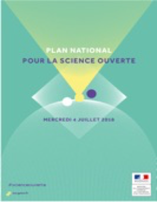
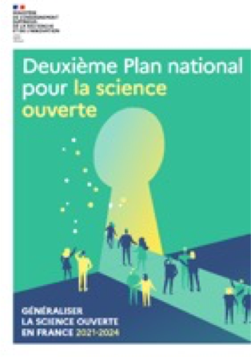

Les bases de la Science Ouverte (T2)
Qu’est-ce que la Science Ouverte (T3)
Partie 1 (T4)
La science ouverte est la diffusion sans entrave des publications et des données de la recherche. Elle s’appuie sur l’opportunité que représente la mutation numérique pour développer l’accès ouvert aux publications et – autant que possible – aux données de la recherche.
La science ouverte vise à construire un écosystème dans lequel la science est plus cumulative, plus fortement étayée par des données, plus transparente, plus rapide et d’accès plus universel.
La science ouverte induit une démocratisation de l’accès aux savoirs, utile à la recherche, à la formation, à l’économie, à la société.
La science ouverte a pour objectif de faire sortir la recherche financée sur fonds publics du cadre confiné des bases de données fermées. Elle réduit les efforts dupliqués dans la collecte, la création, le transfert et la réutilisation du matériel scientifique. Elle augmente ainsi l’efficacité de la recherche.
La science ouverte favorise également les avancées scientifiques (lien), particulièrement les avancées imprévues, ainsi que l’innovation, les progrès économiques et sociaux, en France, dans les pays développés et dans les pays en développement.
Enfin, la science ouverte constitue un levier pour l’intégrité scientifique et favorise la confiance des citoyens dans la science. Elle constitue un progrès scientifique et un progrès de société .
Une dynamique au niveau national et international
Le mouvement de la Science Ouverte est soutenu au niveau national et européen.
En France :
Le Comité national pour la science ouverte (CoSo) assure la mise en œuvre d’une politique de soutien à l’ouverture des publications et des données de la recherche. Il rassemble plus de 200 expert·e·s réparti·e·s au sein de différents groupes de travail.
Le CoSo a mis en place un site, Ouvrir la science, qui permet d’être informé des dernières actualités autour de la science ouverte.

En juillet 2018, Frédérique Vidal annonce le lancement du premier Plan national pour la science ouverte (PNSO1), structuré en 3 axes :
- 1. Généraliser l’accès ouvert aux publications.
- 2. Structurer et ouvrir les données de la recherche.
- 3. S’inscrire dans une dynamique durable, européenne et internationale.
En juillet 2021, un bilan de ce premier plan a été publié mettant en avant les différentes actions réalisées :
- Le Fonds national pour la science ouverte a été créé et a lancé deux appels à projets.
- Des moyens conséquents ont été déployés pour renforcer et pérenniser l’archive ouverte nationale HAL.
- L’Agence nationale de la recherche (ANR) et d’autres agences de financement demandent désormais l’accès ouvert aux publications et la rédaction de plans de gestion des données (PGD) pour les projets qu’elles financent.
- La fonction d’administrateur·rice ministériel·le des données de la recherche a été créée et un réseau est en cours de déploiement dans les établissements.
- Plusieurs guides et recommandations pour mettre en pratique la science ouverte dans le quotidien de la recherche ont été publiés.
- Une vingtaine d’universités et d’organismes de recherche s’est dotée d’une politique de science ouverte.
- La France a largement accru sa présence dans les instances européennes et internationales.

En juillet 2021, la France adopte un deuxième Plan national pour la science ouverte (PNSO2), structuré en 4 axes :
- 1. Généraliser l’accès ouvert aux publications.
- 2. Structurer et ouvrir les données de la recherche.
- 3. Ouvrir et promouvoir les codes sources produits par la recherche.
- 4. Transformer les pratiques pour faire de la science ouverte le principe par défaut.
Ce nouveau plan « définit des engagements renouvelés pour construire une science plus solidement étayée et reproductive, plus efficace et cumulative, plus transparente et accessible pour les citoyens et les acteurs économiques et sociaux ».
La Science Ouverte à l’UT2J
Engagée dans cette démarche dès 2008, l'UT2J a ouvert en 2011 un portail de dépôt HAL UT2J. En 2022, ce sont déjà plus de 25 383 publications en texte intégral et plus de 28 179 notices bibliographiques qui sont ainsi accessibles.
En 2014, un groupe de travail « Open Access UT2J » adossé à la Commission Recherche a été créé. Son objectif est de constituer un espace de réflexion autour du recensement, de la visibilité de la production scientifique de l’établissement en libre accès (accès pérenne). Il travaille aux côtés de la Commission Recherche pour faire progresser la diffusion et le partage des résultats de recherche des laboratoires, de manière ouverte. Ce groupe de travail a évolué en 2018 afin de de prendre en compte l’ensemble des aspects liés à la Science Ouverte : l’édition scientifique privée et publique, l’ensemble des outils et plateformes de diffusion de la recherche (archives ouvertes, réseaux sociaux de recherche, …), les données de la recherche et les aspects liés à l’identité numérique et aux identifiants.